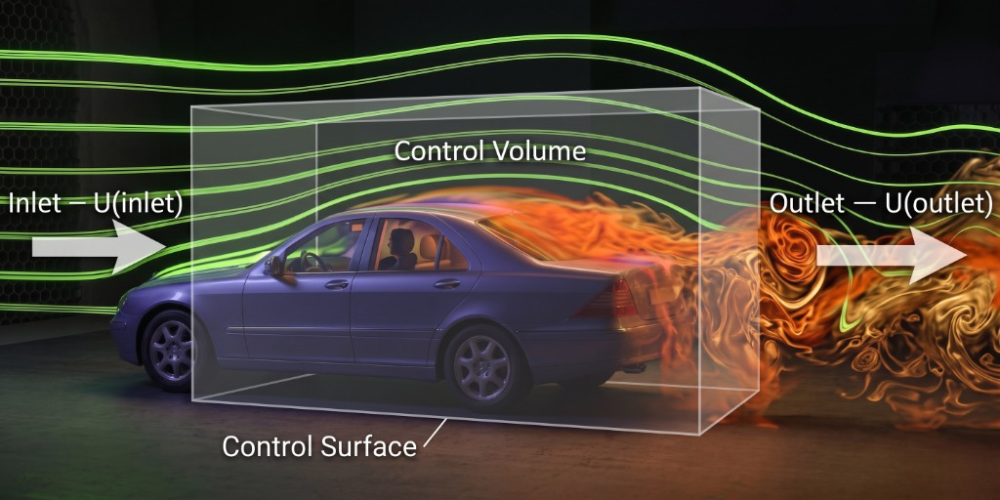
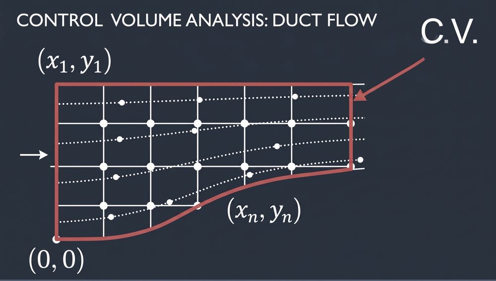
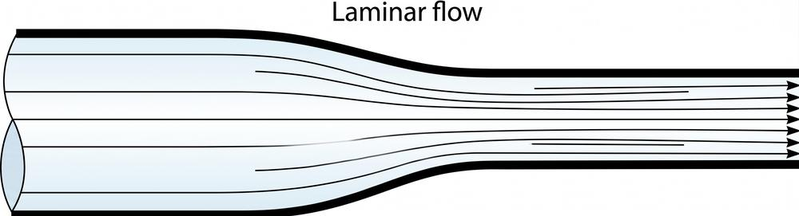

قبل الدخول في تفاصيل الـ Kinematics، ثمة سؤال جوهري ينبغي الإجابة عنه أولاً: على أي مستوى من التفاصيل نريد تحليل الـ Flow؟ هذا السؤال يقودنا إلى التمييز بين أسلوبين رئيسيين في التحليل: Integral Form، الذي يدرس سلوك السائل بشكل كلّي عند حدود منطقة محددة — وDifferential Form، الذي يتتبع تفاصيل حركة السائل عند كل نقطة في الفضاء والزمن. الاختيار بين الأسلوبين يحدد ليس فقط مستوى التعقيد الرياضي، بل أيضاً طبيعة الإجابات التي يمكننا الحصول عليها من الحل.
∯ Integral Form
Definition · Fluid 1 — Integral Form
يهدف الـ Integral Form إلى حساب الخواص الكلية والعامة للـ Flow، مثل قوى الـ Drag وLift، وذلك بدراسة ما يحدث عند حدود الـ Control Volume فقط — أي عند الـ Control Surface — دون الحاجة لمعرفة تفاصيل الـ Flow في كل نقطة داخل الحجم.

Integral Form: only inlet & outlet conditions at the Control Surface matter
∂ Differential Form
Definition · Fluid 2 — Differential Form
يهدف الـ Differential Form إلى حساب الـ Flow عند كل نقطة في مجال الدراسة، أي بصيغة دالة في المكان والزمن:
u(x, y, z, t). هذا يعطينا معرفة تفصيلية كاملة بسلوك النظام بأكمله، لكنه أكثر تعقيدًا في الحل.
فمثلًا في حالة السيارة، الـ Integral Form يركّز فقط على سرعة الدخول U(inlet) وسرعة الخروج U(outlet) عند حدود الـ Control Volume، بينما الـ Differential Form يهتم بمعرفة السرعة عند كل نقطة محددة حول جسم السيارة، مثل u(x₁,y₁,z₁,t) وu(x₂,y₂,z₂,t) وu(x₃,y₃,z₃,t). الفيديو المصغّر بجانب هذا النص يوضّح الفكرة بصريًا: نقاط قياس منفصلة حول جسم السيارة، ثم تكبير عند إحدى هذه النقاط لإظهار كيف تتحلل السرعة عندها إلى مركبات Vₓ, Vy, V_z على المحاور الثلاثة x, y, z — وهو بالضبط جوهر الـ Differential Form: معرفة السرعة كمتجه كامل عند كل نقطة على حدة.
Differential Form: point velocities u(x₁,y₁,z₁,t)... zooming into Vx, Vy, Vz at one point
Physical Insight
الـ Integral Form أسهل في الحل لأنه يتعامل مع كميات كلية (Bulk quantities) عند حدود محددة، بينما الـ Differential Form أصعب لأنه يتطلب حل معادلات تفاضلية تصف سلوك كل جزء متناهي الصغر من المائع.
Conservation of Mass: Macroscopic Control Volume (Lagrangian/Eulerian bulk flows ṁ_in & ṁ_out) vs. Infinitesimal Fluid Element dx·dy·dz (Eulerian detailed flow field)
Note
لاحظ كيف أن نفس القانون الفيزيائي — حفظ الكتلة (Conservation of Mass) — يمكن كتابته بصيغتين مختلفتين تمامًا: صيغة كلية سهلة الحل تُستخدم لحساب تدفق الكتلة الداخل والخارج من حجم تحكم (كما في مثال ṁ₁ = 2 kg/s و ṁ₂ = 3 kg/s ليعطي ṁ_out = 5 kg/s)، وصيغة تفاضلية معقدة تصف السلوك عند كل نقطة (dx, dy, dz) داخل المائع. هذا هو جوهر الفرق بين الـ Integral والـ Differential Form الذي سنبني عليه فهمنا لموضوع الـ Fluid Kinematics.
🌊
Fluid Kinematics — Overview
Describing motion without considering forces
DefinitionFluid Kinematics يهتم بوصف حركة الموائع دون الحاجة بالضرورة لدراسة القوى والعزوم (Forces and Moments) التي تسبب هذه الحركة. بشكل عام، Kinematics هو الفرع الذي يهتم بدراسة الحركة نفسها بمعزل عن أسبابها.
موضوعات الـ Fluid Kinematics التي سنغطيها في هذه المحاضرة تشمل:
Deformation, rate of translation, rate of rotation, strain rate
6
Vorticity, rotationality, and irrotationality
قبل أن نتعمق في المعادلات، دعونا نطرح على أنفسنا سؤالاً بسيطًا: كيف يمكننا وصف حركة أي مائع (Fluid)؟ 🤔
إذا كان لدينا ماء يتحرك داخل ماسورة، أو هواء يتحرك حول طائرة، فإن هناك طريقتين أساسيتين لدراسة هذه الحركة. هاتان الطريقتان هما الـ Lagrangian والـ Eulerian.
ولفهم الفرق بينهما ببساطة، تخيل أنك تراقب حركة السيارات على طريق سريع...
🎯
Lagrangian Description
Following individual fluid particles
Definition
في الـ Lagrangian Description لا نثبت نقطة القياس في المكان، وإنما نتابع Fluid Particle معينة أثناء حركتها. أي أننا نختار جسيم مائع محدد (كمية صغيرة جدًا من المائع) ونتحرك معه، مسجّلين خواصه أثناء انتقاله من مكان إلى آخر عبر تتبع الموضع (\(\vec{X}_A, \vec{X}_B, \vec{X}_C\)) والسرعة (\(\vec{V}_A, \vec{V}_B, \vec{V}_C\)) لكل جسيم على حدة.
Limitation
هذه الطريقة صعبة جدًا في وصف الموائع لأن المائع يُعامَل كـ Continuum (وسط متصل)، أي يحتوي على عدد لا نهائي عمليًا من الجسيمات، فتتبع كل جسيم على حدة يصبح غير عملي. لذلك تُستخدم هذه الطريقة بشكل أساسي في تطبيقات الـ Discrete Phase (مثل تتبع قطرات الرذاذ أو الجسيمات الصلبة داخل المائع)، وفي التجارب المعملية (Experiments).
Governing Relation
\[
\frac{d\vec{X}_A}{dt} = \vec{V}_A
\]
وبصورة أعم، إذا كانت إحداثيات الجسيم تتغير مع الزمن بالشكل \(x=x(t)\)، \(y=y(t)\)، \(z=z(t)\)، فإن متجه السرعة يُكتب:
الرسم يوضح فكرة تتبع Particle A عبر الزمن: يبدأ الجسيم من موضع \(\vec{X}_A(t_1)\) عند الزمن \(t\)، ويتحرك على طول Particle path (مسار حقيقي منحني في الفراغ) وصولًا إلى الموضع \(\vec{X}_A(t_2)\) عند الزمن \(t+\delta t\).
Applications
Discrete phase modeling (رذاذ، جسيمات صلبة) · Experimental Fluid Mechanics (أجهزة قياس متحركة مع الجسيم)
📍
Eulerian Description
Fixed frame — field variables in space and time
Definition
في الـ Eulerian Description نستخدم Fixed Frame (إطارًا مرجعيًا ثابتًا). يُعرَّف حجم منتهٍ يُسمى Flow Domain أو Control Volume، يدخل ويخرج منه المائع، ثم تُعرَّف الخواص الحقلية (Field Variables) كدوال في المكان والزمن داخل هذا الحجم. أي أننا لا نتبع جسيمًا معينًا، بل نثبّت مكان القياس ونسجّل ما يحدث للـ Flow عند هذا المكان مع الزمن.
Field Variables
\[
\text{Velocity field: } \quad \vec{V} = \vec{V}(x, y, z, t)
\]
\[
\text{Pressure field: } \quad P = P(x, y, z, t)
\]
فعلى سبيل المثال، لقياس خواص الـ Flow عند نقطة محددة مثل \((x_1, y_1, z_1)\)، نضع جهاز قياس ثابتًا عند هذه النقطة ونسجّل خواص المائع (سرعة، ضغط، درجة حرارة...) أثناء مروره بها — دون أن نتابع جسيمًا بعينه.

A fixed grid of points inside a Control Volume — properties are recorded at each fixed location
Applications
Continuum flow modeling (تحليل المائع كوسط متصل) · Camera-based flow visualization (تصوير المجال بأكمله في لحظة واحدة)
Continuous Phase vs Discrete Phase
في بعض التطبيقات يكون المائع نفسه هو Continuous Phase، بينما توجد بداخله جسيمات أو قطرات (Particles / Droplets / Spray) تمثل Discrete Phase. عادة:
الحالة
الطريقة المناسبة
دراسة المائع المتصل (Continuous Fluid)
Eulerian Description
تتبع جسيم أو مجموعة جسيمات محددة
Lagrangian Description
وهذا التمييز مهم جدًا في تطبيقات CFD (Computational Fluid Dynamics) حيث تُستخدم كلتا الطريقتين معًا أحيانًا لنمذجة أنظمة تحتوي على مائع مستمر مع جسيمات متفرقة بداخله.
جدول المقارنة الشامل
Eulerian Description
Lagrangian Description
Fixed Frame
تتحرك مع الـ Particle
ندرس نقطة محددة في المكان
نتابع Particle محددة
Flow Field
Particle Motion
نقيس الخواص عند نقاط ثابتة
نسجل الخواص أثناء حركة Particle
مناسب لوصف الـ Flow Field
مناسب لتتبع الـ Particles
🧮
Solved Example — Velocity Field
Stagnation point & velocity magnitude
مثال محلول · Worked Example
A steady, incompressible, two-dimensional velocity field is given by:
(a) Determine if there are any stagnation points in the flow field. If so, where?
(b) Sketch velocity vectors at several locations in the domain between x = −2 m to 2 m and y = 0 m to 5 m.
(c) Calculate the velocity magnitude at x = 0, y = 0.
نقطة التوقف (Stagnation Point): هي نقطة في مجال الـ Flow تكون فيها السرعة صفرًا. بوضع \(u=0\) و \(v=0\) وحل المعادلتين، نحصل على نقطة التوقف عند:
\[
x = -0.625 \text{ m}, \quad y = 1.875 \text{ m}
\]
رسم متجهات السرعة (b): يوضح الشكل أدناه اتجاهات ومقادير متجهات السرعة في المجال المطلوب، مع تحديد نقطة التوقف (الدائرة الزرقاء) والمنطقة المطلوب التركيز عليها بين x = 0 إلى 2 و y = 0 إلى 3 (المستطيل الأحمر).
NoteA stagnation point is defined as a point in the flow field where the velocity is zero. عند نقطة التوقف، يتوقف المائع لحظيًا عن الحركة تمامًا قبل أن يتغير اتجاهه — وهذا مفهوم مهم جدًا في تحليل الجريان حول الأجسام (مثل مقدمة جناح الطائرة).
∂
Material Derivative (Total Derivative)
Local derivative + Convective (spatial) derivative
Definition
الـ Material Derivative (وتُسمى أيضًا Total Derivative أو Substantial Derivative) هي أداة رياضية تربط بين وجهة النظر الـ Lagrangian (التغير الذي يشعر به جسيم متحرك) ووجهة النظر الـ Eulerian (الحقل المعرّف كدالة في المكان والزمن).
Physical Insight — تفسير الحدين
الحد الأول \(\dfrac{\partial}{\partial t}\) يُسمى Local Derivative: يمثل التغير الحادث عند نقطة ثابتة في المكان بمرور الزمن (تغير مع الزمن فقط، دون حركة). الحد الثاني \((\vec{V}\cdot\vec{\nabla})\) يُسمى Spatial Derivative أو Convection (Advection): يمثل التغير الناتج عن انتقال الجسيم من نقطة لأخرى ذات خواص مختلفة في المجال.
Definition — Uniform FlowUniform Flow: هو Flow المائع الذي يتحرك فيه كل جسيم على طول خط سريانه بسرعة ثابتة، بحيث يبقى المقطع العرضي لكل أنبوب سريان (Stream Tube) دون تغيير عند لحظة زمنية معينة.
Physical Insight
لاحظ أن انعدام الحد المحلي (Steady) لا يعني انعدام المشتقة المادية الكلية، وكذلك انعدام الحد الحملي (Uniform) لا يعني انعدامها أيضًا — فكل حالة تُلغي حدًا واحدًا فقط من المعادلة، بينما يبقى الحد الآخر (والمشتقة الكلية بشكل عام) غير صفري في الحالة العامة.
🚀
Acceleration Field
Eulerian acceleration — vector & component form
بتطبيق مفهوم المشتقة المادية على متجه السرعة نفسه، نحصل على حقل التسارع (Acceleration Field) بمنظور Eulerian:
Physical Insight
كل مركبة من مركبات التسارع تحتوي على حد محلي (\(\partial u/\partial t\)) يمثل التغير الزمني عند نقطة ثابتة، بالإضافة إلى ثلاثة حدود حملية (Convective) تمثل تغير السرعة نتيجة انتقال الجسيم عبر المجال المكاني في الاتجاهات الثلاثة.
🧮
Solved Example — Fluid Acceleration
Applying the acceleration components
مثال محلول · Worked Example
A steady, incompressible, two-dimensional velocity field is given by:
Definition
الـ Streamline هي خط يكون مماسًا (Tangent) لمتجه السرعة اللحظي المحلي (Instantaneous Local Velocity Vector) عند كل نقطة. أي أن اتجاه الـ Streamline عند أي نقطة هو نفس اتجاه متجه السرعة عند هذه النقطة بالضبط.

Laminar flow — streamlines remain parallel and do not cross
إذا كان متجه السرعة \(\vec{V}=u\hat{i}+v\hat{j}+w\hat{k}\)، وكان عنصر الإزاحة اللانهائي الصغر على طول الـ Streamline هو \(d\vec{r}=dx\hat{i}+dy\hat{j}+dz\hat{k}\)، فإن شرط التماسّ (أن يكون \(d\vec{r}\) موازيًا للسرعة المحلية \(\vec{V}\)) يعطينا معادلة الـ Streamline:
The displacement vector dr is parallel to the local velocity vector V at every point
وبما أن \(d\vec{r}\) يجب أن يكون موازيًا لمتجه السرعة المحلي \(\vec{V}=u\hat{i}+v\hat{j}+w\hat{k}\)، فإنه في حالة الجريان الثنائي الأبعاد داخل مستوى xy، يمكن اختصار معادلة الـ Streamline إلى:
Streamline in the xy-plane
\[
\left(\frac{dy}{dx}\right)_{\text{along a streamline}} = \frac{v}{u}
\]
Physical Insight
الـ Streamlines تعطينا صورة بصرية لشكل ومسار الـ Flow عند لحظة زمنية معينة. في حالة الـ Steady Flow، تتطابق الـ Streamlines مع مسارات الجسيمات الفعلية (Pathlines)، بينما في الـ Unsteady Flow قد تختلف الاثنتان لأن شكل الـ Streamlines نفسه يتغير مع الزمن.
🔄
Rotation & Vorticity
Rate of rotation, vorticity vector, irrotational flow
ملاحظة مهمة من الدكتور
وجود حركة للمائع لا يعني بالضرورة وجود Rotation. فقد يتحرك عنصر المائع بسرعة منتظمة وفي خط مستقيم دون أن يدور. لذلك نحتاج إلى كمية رياضية تحدد وجود الـ Rotation ومقداره واتجاهه — وهذا ما توفره لنا الـ Vorticity ومتجه معدل الدوران.
Rate of Rotation (Angular Velocity)
Definition
متجه معدل الدوران (Rate of Rotation Vector) يُعرَّف بأنه نصف الـ Curl لمتجه السرعة:
Physical Insight — نقطة مهمة أكدها الدكتور
الـ Flow يمكن أن تكون له سرعة غير صفرية، وفي نفس الوقت يكون Irrotational. أي أن وجود السرعة لا يعني بالضرورة وجود Rotation. يمكن تخيل عنصر صغير من المائع على شكل مربع: إذا تحرك المائع بحيث تغير اتجاه أضلاع العنصر وأصبح العنصر يدور حول نفسه، فهذا يعني وجود Rotation؛ أما إذا تحرك العنصر بدون أن يدور حول نفسه، فإن \(\omega=0\) والـ Flow يكون Irrotational.
Engineering Significance
معرفة وجود الـ Rotation ومقداره واتجاهه تساعد في وصف سلوك الـ Flow في تطبيقات هندسية مهمة مثل: أجنحة الطائرات، السيارات، التوربينات، وكل الأنظمة التي يحدث فيها تغير في اتجاه حركة المائع.
Rotation في الـ 3D Flow
في حالة الـ 3D Flow يمكن أن يكون الدوران حول أي من المحاور الثلاثة x وy وz، ويمكن حساب الـ Curl باستخدام المحدد (Determinant):
\[
\vec{\nabla}\times\vec{V} =
\begin{vmatrix}
\hat{i} & \hat{j} & \hat{k} \\
\dfrac{\partial}{\partial x} & \dfrac{\partial}{\partial y} & \dfrac{\partial}{\partial z} \\
u & v & w
\end{vmatrix}
\]
ومنها نحصل على نفس الصيغة الديكارتية الموضحة أعلاه، والسرعة الزاوية تكون نصف الـ Curl: \(\vec{\omega}=\frac{1}{2}\vec{\nabla}\times\vec{V}\).
📐
Linear & Shear Strain Rate
Deformation of a fluid element
بعد دراسة الـ Rotation، ننتقل إلى الـ Strain / Deformation: يصف التغير الذي يحدث في شكل أو حجم عنصر المائع نتيجة الحركة. نسأل: هل العنصر المائع تغير شكله أو حجمه أثناء الحركة؟ فإذا كان العنصر في البداية مربعًا ثم تغير شكله أو أبعاده، فهذا يدل على وجود Deformation. يجب التمييز بين نوعين: Normal (Linear) Strain و Shear Strain.
Linear Strain Rate (Normal Strain)
Definition
الـ Linear Strain Rate تُعرَّف بأنها معدل الزيادة في الطول لكل وحدة طول (rate of increase in length per unit length). ترتبط بالتغير في طول العنصر في اتجاه معين.
Linear strain — elongation of a fluid element along one direction
Shear Strain Rate
Definition
الـ Shear Strain Rate عند نقطة تُعرَّف بأنها نصف معدل نقصان الزاوية بين خطين متعامدين في البداية ويتقاطعان عند تلك النقطة (half of the rate of decrease of the angle between two initially perpendicular lines).
Shear strain — the fluid element deforms into a parallelogram as adjacent sides rotate
Physical Insight
لاحظ الفرق الجوهري بين الحالتين: الـ Linear Strain لا يغير زوايا العنصر — العنصر يبقى مستطيلًا لكن بأبعاد مختلفة (تمدد أو انكماش). أما الـ Shear Strain فيغيّر الزوايا بين الأضلاع، فيتحول المربع إلى متوازي أضلاع مائل دون بالضرورة تغيير المساحة.
🔢
Strain Rate Tensor
Combining linear and shear strain rate
Definition
الـ Strain Rate Tensor هو تجميع منظّم لكل من الـ Linear Strain Rate (على القطر الرئيسي) والـ Shear Strain Rate (خارج القطر الرئيسي) في مصفوفة واحدة \(3\times3\) تصف حالة التشوه الكاملة لعنصر المائع في الفراغ الثلاثي الأبعاد.
Note
المصفوفة متماثلة (Symmetric): \(\varepsilon_{xy}=\varepsilon_{yx}\)، \(\varepsilon_{yz}=\varepsilon_{zy}\)، \(\varepsilon_{zx}=\varepsilon_{xz}\). العناصر القطرية تمثل الـ Normal Deformation (التمدد/الانكماش في كل اتجاه)، بينما العناصر خارج القطر تمثل الـ Shear Deformation (تغير الزوايا).
ملاحظة الدكتور
من المهم جدًا عدم الخلط بين الـ Rotation والـ Strain. قد يكون العنصر:
يتحرك بدون Rotation.
يدور بدون أن يحدث له Deformation في بعض الحالات.
يتعرض لـ Deformation فقط.
يتعرض في الوقت نفسه لكل من Rotation و Deformation معًا.
لذلك يجب حساب كل كمية بشكل مستقل عن الأخرى.
الكمية
تعتمد على
Rotation
\(\vec{\omega}=\frac{1}{2}\vec{\nabla}\times\vec{V}\) — الـ Curl لمتجه السرعة
Deformation / Strain
معدلات تغير مركبات السرعة بالنسبة للإحداثيات المكانية
Physical Insight
فيزيائيًا، الـ Curl يلتقط الجزء غير المتماثل (Antisymmetric) من مصفوفة تدرّج السرعة (Velocity Gradient Tensor)، بينما الـ Strain Rate Tensor يلتقط الجزء المتماثل (Symmetric) منها. هذا هو السبب الرياضي في أن الكميتين مستقلتان تمامًا عن بعضهما ويمكن أن توجدا معًا أو بشكل منفرد.
🗺️
Problem-Solving Roadmap
Given a velocity field — what to compute
مثال الدكتور للخطوات العامة عند إعطائك Velocity Field في مسألة ويُطلب منك تحليلها بالكامل:
#
الخطوة
القانون المستخدم
1
حساب الـ Streamlines
\(\dfrac{dx}{u}=\dfrac{dy}{v}=\dfrac{dz}{w}\)
2
حساب الـ Rotation — احسب \(\nabla\times\vec{V}\) ثم \(\vec{\omega}=\frac{1}{2}\nabla\times\vec{V}\). إذا كانت \(\nabla\times\vec{V}=0\) فالـ Flow يكون Irrotational
\(\vec{\omega}=\frac{1}{2}\nabla\times\vec{V}\)
3
حساب الـ Strain / Deformation بحساب مشتقات مركبات السرعة بالنسبة للإحداثيات المختلفة
Note on Content Completeness
الجزء الأخير من التسجيل الأصلي (المتعلق بحل مثال رقمي كامل يطبّق هذه الخطوات الأربع على حقل سرعة محدد) كان يحتوي على تشويش شديد في التفريغ الصوتي. لذلك تم الاكتفاء بعرض العلاقات والمفاهيم والخطوات العامة التي وردت بوضوح في المصدر، دون اختراع أرقام أو قيم مسألة غير مؤكدة. أي تفاصيل رقمية إضافية من المسألة الأصلية تعتبر [غير واضح في التسجيل].
🎓
Summary / Key Takeaways
Three core ideas of fluid motion description
عند دراسة حركة المائع (Fluid Motion) يجب التمييز بين ثلاث أفكار أساسية:
Streamline
خط يكون مماسًا لمتجه السرعة عند كل نقطة، ويُستخدم لتحديد شكل ومسار الـ Flow:
\[
\frac{dx}{u}=\frac{dy}{v}=\frac{dz}{w}
\]
Rotation
يصف دوران عنصر المائع حول نفسه، ويُحدد باستخدام:
\[
\vec{\omega}=\frac{1}{2}\nabla\times\vec{V}
\]
وإذا كانت \(\nabla\times\vec{V}=0\) فالـ Flow يكون Irrotational.
Strain / Deformation
يصف التغير في شكل أو أبعاد عنصر المائع، وينقسم إلى:
Normal (Linear) Deformation — تغير في الطول
Shear Deformation — تغير في الزوايا
ملاحظات مهمة من الدكتور
#
الملاحظة
1
الفرق الجوهري بين الطريقتين: الـ Eulerian بيثبت المكان ويدرس ما يمر به، والـ Lagrangian بيتبع الـ Particle نفسها أثناء حركتها
2
الحركة لا تعني بالضرورة وجود Rotation — ممكن يكون فيه Velocity غير صفرية والـ Flow يكون Irrotational في نفس الوقت
3
Translation، Rotation، وDeformation ليست شيئًا واحدًا — يمكن أن تحدث بصورة مستقلة أو مجتمعة، ويجب حساب كل كمية على حدة
4
Rotation تعتمد على الـ Curl لمتجه السرعة، بينما Strain/Deformation تعتمد على مشتقات مركبات السرعة بالنسبة للإحداثيات المكانية
✏️
Practice Questions
Test your understanding
أسئلة تدريبية قابلة للطي
Q1. Explain the fundamental difference between the Lagrangian and Eulerian descriptions of fluid motion.
اشرح الفرق الجوهري بين وصف Lagrangian ووصف Eulerian.
في الـ Lagrangian Description، نتابع جسيمًا محددًا من المائع أثناء حركته عبر الزمن، ونسجل موضعه وسرعته وخواصه — أي أن الإطار المرجعي يتحرك مع الجسيم. أما في الـ Eulerian Description، فنستخدم إطارًا مرجعيًا ثابتًا (Fixed Frame): نختار نقاطًا محددة في المجال ونراقب خواص أي مائع يمر بها مع الزمن، دون تتبع أي جسيم بعينه. الـ Eulerian هي الطريقة الأكثر استخدامًا عمليًا لأن المائع Continuum يصعب فيه تتبع كل جسيم على حدة.
Q2. For the velocity field \(\vec{V}=(0.5+0.8x)\hat{i}+(1.5-0.8y)\hat{j}\), verify that the stagnation point occurs at x = −0.625 m, y = 1.875 m.
تحقق من موضع نقطة التوقف بوضع u = 0 و v = 0.
عند نقطة التوقف تكون كل من u و v تساوي صفرًا:
\[
u = 0.5 + 0.8x = 0 \;\Rightarrow\; x = -\frac{0.5}{0.8} = -0.625 \text{ m}
\]
\[
v = 1.5 - 0.8y = 0 \;\Rightarrow\; y = \frac{1.5}{0.8} = 1.875 \text{ m}
\]
وبالتالي فإن نقطة التوقف تقع عند \((x,y) = (-0.625,\ 1.875)\) متر، وهذا يطابق النتيجة المعطاة في المثال المحلول.
Q3. Is it possible for a fluid element to have non-zero velocity while being irrotational? Explain.
هل يمكن أن يكون للمائع سرعة غير صفرية مع كونه Irrotational؟ اشرح.
نعم، هذا ممكن تمامًا وهو أمر مؤكَّد من الدكتور في المحاضرة. وجود سرعة (حركة انتقالية Translation) لا يعني بالضرورة وجود دوران. الـ Flow يكون Irrotational طالما أن \(\nabla\times\vec{V}=0\)، بغض النظر عن مقدار السرعة نفسها. فيزيائيًا، يمكن تخيل عنصر مائع مربع يتحرك في خط مستقيم بسرعة منتظمة دون أن تدور أضلاعه حول مركزه — هذا Flow له سرعة غير صفرية لكنه Irrotational.
Q4. What is the difference between the terms on the diagonal and off-diagonal of the Strain Rate Tensor?
ما الفرق بين العناصر القطرية وغير القطرية في Strain Rate Tensor؟
العناصر القطرية (\(\varepsilon_{xx}, \varepsilon_{yy}, \varepsilon_{zz}\)) تمثل الـ Linear (Normal) Strain Rate — أي معدل التمدد أو الانكماش في كل اتجاه إحداثي على حدة، وتُحسب من \(\partial u/\partial x\) وما شابه. أما العناصر غير القطرية (مثل \(\varepsilon_{xy}\)) فتمثل الـ Shear Strain Rate — أي معدل التغير في الزوايا بين أضلاع العنصر المتعامدة أصلًا، وتُحسب من مجموع مشتقتين متبادلتين مقسومًا على 2، مثل \(\frac{1}{2}(\partial u/\partial y + \partial v/\partial x)\).
🤲 ولا تنسوا الصلاة على النبي صلى الله عليه وسلم، والدعاء لإخوانكم في فلسطين وغزة وفي جميع بقاع الأرض، وأن ينصر الله المسلمين المستضعفين. 🤲